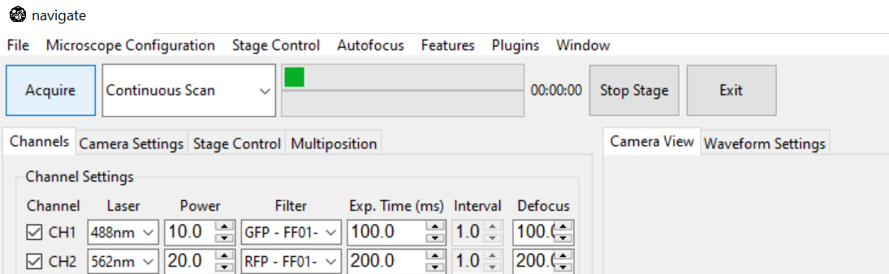

Multiple Cameras
navigate is crafted for extensibility to enable the virtualization of multiple microscopes using the same and/or different devices, including cameras.
Enabling Multi-Camera Operation
navigate gives users the flexibility to capture images with multiple cameras. Prior to launching navigate, it is important that both cameras are functioning with the computer, and that they share the same external trigger signal from the data acquisition card. See Cameras for more information.
Select and click menu .

There will be a pop-up window displaying a list of all available microscopes with its hardware details.

There are three settings options for each microscope.

Set Primary Microscope and Additional Microscope, then click Confirm.

Then set Acquisition mode and click Acquiring the same way as using one camera. There will be a pop-up window displaying images obtained from an additional camera.

Disabling Multi-Camera Operation
Once you’re finished acquiring images with multiple cameras, remember to reset to the single-camera mode.
Select and click menu .
Set Primary Microscope and set the “additional microscope” as Not Use. Then click Confirm.